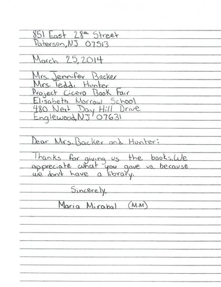
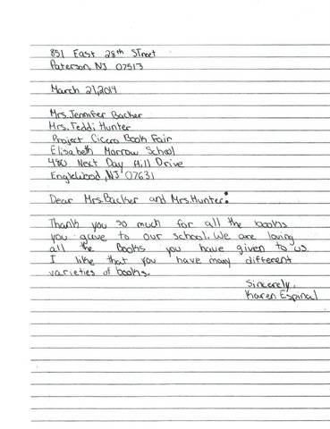
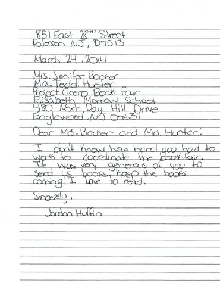
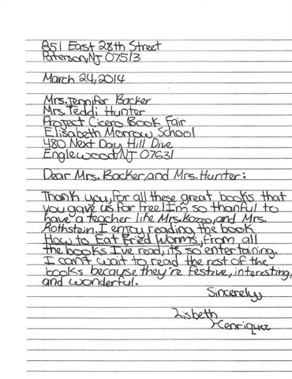
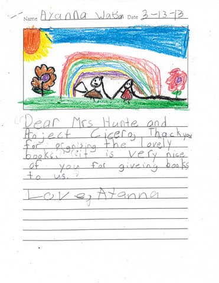
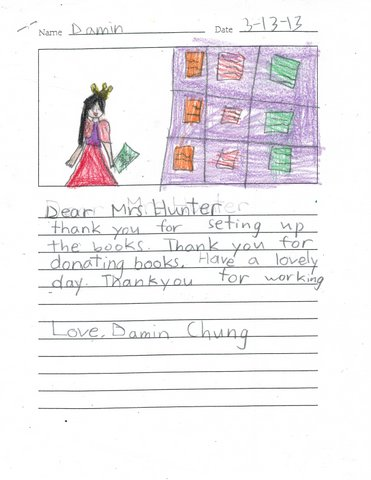
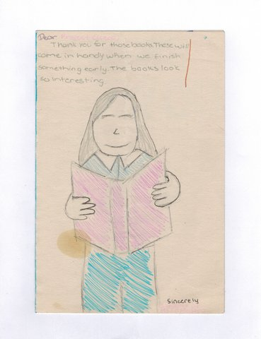
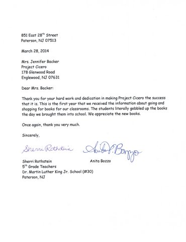

IMPACT
Since its inception, Project Cicero NNJ estimates distributing over 100,000 books to NJ schools. Teachers can create different lessons around the selected books and can use the books as tools for struggling readers and as incentives to help boost literacy skills. Teachers have said that Project Cicero books have increased their students’ enjoyment of reading, introduced their students to new subject matter, improved their students’ reading level and/or skills.
Donor schools have student leaders who publicize and organize their individual school’s collection. That’s one of the greatest things about Project Cicero NNJ- kids helping other kids. Project Cicero NNJ shows teachers and students from different backgrounds and experiences that we are all responsible for one another and connected. Such small effort by many makes a huge impact for many.
Donor schools have student leaders who publicize and organize their individual school’s collection. That’s one of the greatest things about Project Cicero NNJ- kids helping other kids. Project Cicero NNJ shows teachers and students from different backgrounds and experiences that we are all responsible for one another and connected. Such small effort by many makes a huge impact for many.








